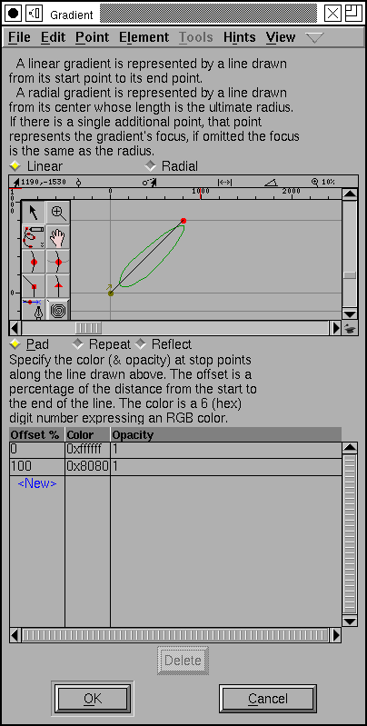
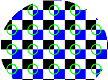
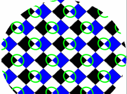

Multi Layered Editing of Type3 and SVG fonts
When loading a type3 font (or an svg font organized in a similar fashion) FontForge will retain information on each stroke and fill command. Each command is placed in a separate layer and may be edited in isolation.
A new font may be converted to a multi-layered font by navigating to Element->Font Info->Layers, then setting the splines option to All layers cubic and the font type option to Type3 Multi Layered Font.
 Multi
Layered editing in the outline view
Multi
Layered editing in the outline view
In the image at left we have a glyph drawn by stroking two paths. One layer (containing one of the paths) is currently selected and is drawn in full. All its points are editable. The other layer is shown as a dashed line.
The Layer palette looks a little different here. There is no hinting information (hints are irrelevant in type3 fonts), instead there are two named layers (background and grid) which behave pretty much as they normally do. They may be made active by clicking on their names. They may be made invisible by turning off the check box associated with them.
Under these two are the layers that make up the glyph in the font. Each layer is identified by a small picture of what that layer looks like when rasterized. Clicking on the layer makes it editable.
The layers are ordered in the list as they will be drawn on the screen. The topmost layer is drawn first, the bottommost is drawn last. Regions drawn earlier will be overwritten by Regions drawn later.
Double clicking on a layer brings up the Layer Info dialog.
Clicking with the right button brings up the layer menu which contains:
- Layer Info...
- Brings up the Layer Info dialog on the current layer (same as double clicking)
- New Layer...
- Creates a new layer and brings up the Layer Info dialog to describe it. (the new layer will appear at the bottom of the layer list and will be drawn last)
- Del Layer
- Deletes the current layer (you may not delete the last layer in a glyph)
- First
- Make the current layer the first one to be drawn.
- Earlier
- Make the current layer be drawn earlier. (swaps it with the layer above it)
- Later
- Makes the current layer be drawn later. (swaps it with the layer below it)
- Last
- Makes the current layer be drawn last.
Images
Images are allowed in Type3 fonts. You can use the File->Import command to load an image into any of the foreground layers. If the image is a bitmap image and the layer will be filled, then it will be output with an imagemask command in PostScript (the bitmap will be drawn with the fill color), otherwise (and always in SVG) the image will be drawn with the colors specified in the image (Transparent images are not supported here).
FontForge will not skew, flip or rotate images.
Clipping Path
Each layer in a Type 3 font may have its own clipping path. A clipping path is a contour (or set of contours) and only things inside the clipping path will be drawn.


The above example shows the letter "A" drawn with a clipping path that looks like a star burst (the clipping path is drawn in blue). To the right above is the result of rasterizing this image. The star is not drawn itself, but only the region of the A within the star will be drawn.
You can change the clipping path with the
Points->Make Clip Path
command. The clipping path will be set to any selected contour(s) in the
image. If no contour is selected then there will be no clipping path.
 The
Layer Info dialog
The
Layer Info dialog
This dialog describes various attributes of the way the splines (or images) in the current layer are drawn.
A layer may be either stroked or filled. Or both. Or neither (layers containing only images need not be filled or stroked).
You may either specify a color to be used for stroking or filling the splines in the layer, or you may specify that the color should be inherited (in conventional fonts the color will be inherited so that the font user can specify the font's color). If you do want to specify a color, you can press the color wheel button to get a color picker dialog, or enter a 6 hex-digit rgb value "#rrggbb".
SVG fonts may include an opacity level (postscript type3 fonts may not). 0 is fully transparent, 1.0 is fully opaque, .5 is translucent. Again this value may be inherited from the environment.
A stroke has a width (which again may be inherited, but probably should not be). Strokes are drawn using a circular pen. An elliptical pen may be specified by giving a transformation matrix here.
A line may be dashed. Dash patterns are specified as a list of numbers, the first number in the list will draw a line segment at most that many em-units, the next number will skip that many em-units, the third will be drawn, and so on. After then entire list has been used, it will start again at the begining. If the list has an odd number of elements, then this time through the first entry indicates that many units should be skipped. So "10" would mean a line which alternates being drawn every 10 units, while "20 10" would draw 20 units, skip 10, draw 20 and so on.
A stroke needs to know how to treat the ends of paths (Line Cap),
and how to join non-tangent path-segments (Line Join).
In an additional level of complexity a contour need not be filled (or stroked) with a constant color, you can provide a repeating pattern, or a gradual change from one color to another (a gradient).
Gradients
FontForge supports two kinds of gradients, linear gradients and radial gradients. In a linear gradient the color changes along a line (as in the example at right, and below)

You can specify the color at any point along the gradient line (as a percentage of the distance along that line). The example at left only specifies a color (white) at the start of the line, and a color (grey) at the end, but intermediate values could be inserted, and a full range of RGB colors may be used.
A Radial gradient specifies a center point and a final radius, the start position (and color) is the center point and colors change in concentric circles until the final radius (and final color) is attained.


Patterns
 A contour
may also be filled or stroked with a tiled pattern. That is a pattern is
repeatedly layed down until it covers the entire area to be filled.
A contour
may also be filled or stroked with a tiled pattern. That is a pattern is
repeatedly layed down until it covers the entire area to be filled.

In the example above the tile  has been scaled and replicated. The example at right is a bit more complex.
Not only is the pattern replicated, but after that it is rotated through
45 degrees
has been scaled and replicated. The example at right is a bit more complex.
Not only is the pattern replicated, but after that it is rotated through
45 degrees

The pattern is defined in another glyph in the same font. By default the bounding box of that glyph will be used to describe the pattern's extent (You may change change that with Element->Glyph Info->Tile Size). You may then scale it by specifying the Width and Height fields. You may apply other transformations as described in the dialog.
FontForge's rasterization leaves much to be desired. It does not support full color (rounding everything to a shade of grey), and its stroking algorithm is quite poor (it does not rasterize dashes), it does not support the full complexity of radial gradients...